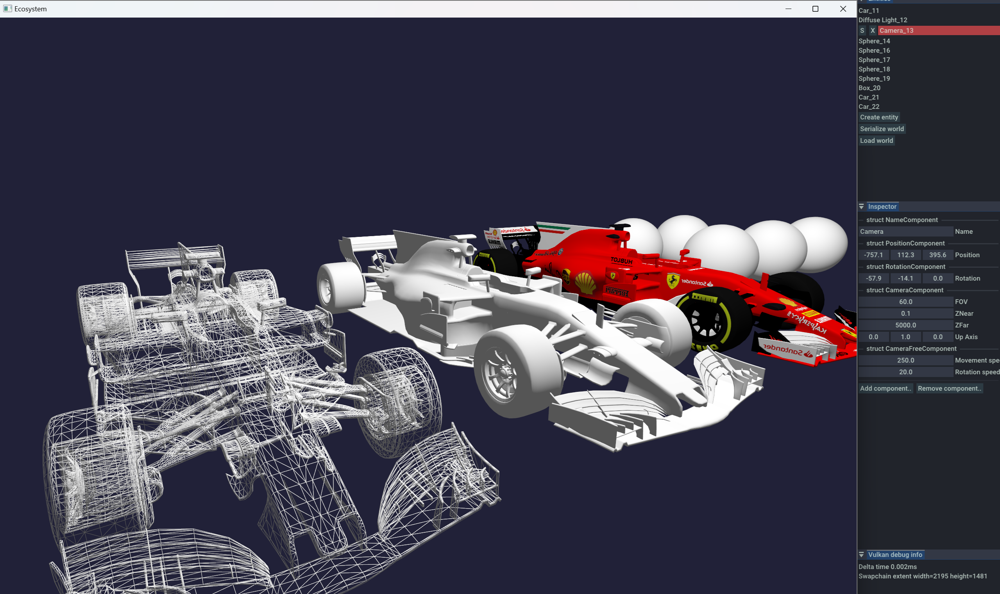

Software engineer with 8 years of experience
● Solid experience with C#
● Have experience with C++ (RAII, STL, Dear Imgui, Entt, Premake)
● Solid experience with Unity3d (3d, 2d, physics, ui, addressables, editor, profilers, services etc)
● Have understanding of graphics rendering pipeline, concepts of Vulkan, OpenGL and GLSL
● Have knowledge of game architecture, design patterns, solid, kiss, dry
● Deep knowledge of algorithms and data structures, algorithms complexity
● Experienced in performance profiling and optimization (cpu, gpu, ram etc)
● Familiar with 3d math, linear algebra
This is my C++ sandbox engine built from the ground up with Vulkan for rendering. I develop it in my spare time to improve my skills and explore new technologies and techniques. The engine leverages an Entity Component System (ECS) to achieve data oriented design of architecture at its core, which allows for efficient testing and parallel execution of game systems. It includes a simple editor (Dear ImGui) that supports runtime serialization and deserialization (Yaml) of entities and components, as well as dynamic component management (adding/removing components during runtime). The Vulkan-based renderer is implemented entirely from scratch.
Tech: C++, Vulkan, Dear Imgui, EnTT, Premake
View on GitHub 